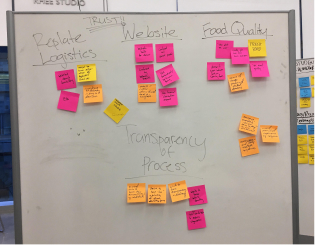

Teammates
Cherry Wu
Pamela Hu
LeAnne Chan
Karen Chou (Mentor)
Duration
Spring 2018 (9 weeks)
Role
Design Consultant
Tools
Adobe Illustrator
Figma
InDesign
Background
Replate is a nonprofit technology that matches surplus food with communities in need instantly. Since January 2016, Replate has fed more than a million meals to people in need and have diverted millions of metric tons of GHGs from our environment.
For this project, Replate challenged us to identify pain points in their existing recipient sign-up experience and reinvent a space for their recipient organizations (i.e. shelters, citizen assistance programs, and charities) to sign up to receive food while fostering trust.
How might we create an intuitive onboarding process for non-profit organizations?
Research
We conducted comprehensive research via a variety of methods to gain insights regarding the Replate rescipient on-boarding process. The methods used include interviewing NPOs, observing potential users, and comparing existing food drive services.
Interviews
We conducted first-hand telephone and in-person interviews with local NPOs to gather thoughts on food donation platforms.
User Observation
We observed several possible recipients walk through the Replate website with the given task of getting food donations for an event.
Secondary Research
We compared user flow of competing food drives e.g Copia, MealConnect and explored the notion of trust via design strategy tutorials e.g AirBnB TED Talk
Insights
From our research, we compiled all of our notes and observations to identify some key findings:
1. A huge emphasis was placed on the quality of the food received, such as cleanliness and freshness.
2. Recipient organizations are less concerned with food origin than quality.
3. The majority of the organizations reported inability to schedule food deliveries, or have mistakenly signed up as a donor.
4. Recipient organizations prefer having specifications of food type and quantity.
5. More individualization and communication is desired.

Personas
We took our insights and generated personas to focus on and design for. We created two personas: the volunteer coordinator and dance collective director.
Volunteer Coordinator
Dance Collective Director

Journey Maps
We developed journey maps for both of our personas to highlight opportunities in the various pain points the individuals faced and get a better grasp of the scope of each issue.
Volunteer Coordinator
Dance Collective Director
User Flow
We studied the user flow of the Replate recipient onboarding to identify which parts to focus and iterate on:
Once landing on the Replate homepage,
the recipient will sign up and create their own portal.
After completing the sign up process, user will fill in
a series of forms to request for food delivery.

Low Fidelity Sketches
Based on our key insights and persona development, we came up with a series of
initial concepts that helped us identify the pain points for the recipient on-boarding process.
The respective ideas address elements specifically for the ‘Recipient Sign Up’ and
‘Food Delivery Request’ form.
Recipient Sign-Up Form
Recipient sign-up form on one full page with different input sections.
Recipient sign-up form in carousel format and separated into respective steps.
We drafted different modes of food delivery request options with the intent to provide recipients with efficiency
and specificity.
The form also serves to
foster the recipient’s trust with Replate through a simple, informative and straightforward sign-up process - allowing them to feel accomplished and satisfied after completion.
Mid-Fidelity Prototype & User Testing
The dashboard displays multiple office locations of a non-profit organization. Users highlight the intuitive and easy to use nature of the screen, but thought that the space seemed wasted.
The sign up and request forms are seen as clean and simple. However, some users completed the form with some questions afterwards-- we needed to provide more descriptions.
The calendar view was inspired by Google Calendar, which many users felt familiar with. The actions to create a new pickup were intuitive.
Users said that the impact and FAQ tabs are easy to understand. However, they also noted that the information could be placed in the dashboard.
High Fidelity Deliverables
After working through user testing and receiving feedback from our client, we developed
and refined deliverables for the recipient onboarding and order requesting experience.
Highlighted below are the key screens.
The client was also able to implement parts of the design! Check it out here.
Recipient Sign Up Portal
Recipient Calendar
Recipient Dashboard